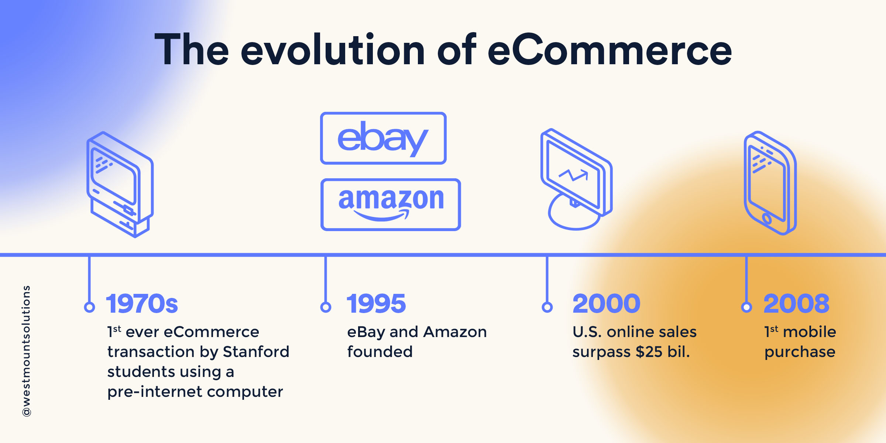
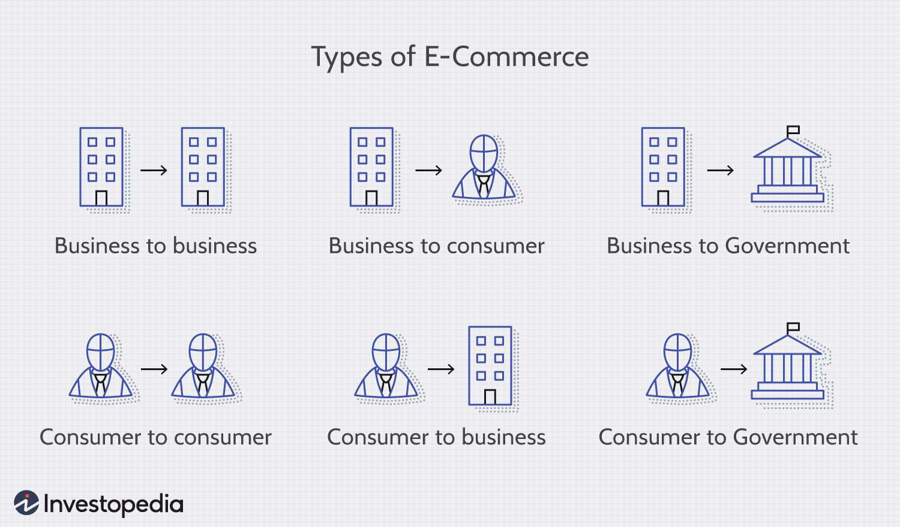
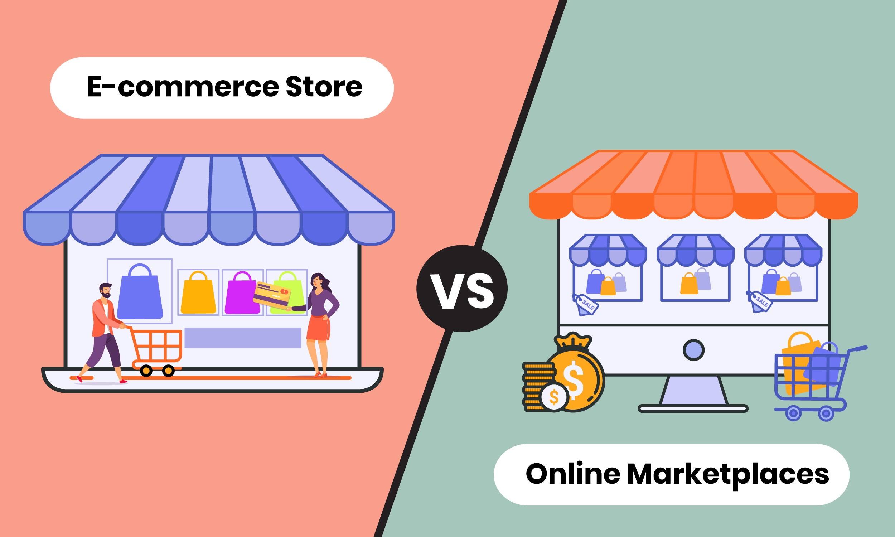
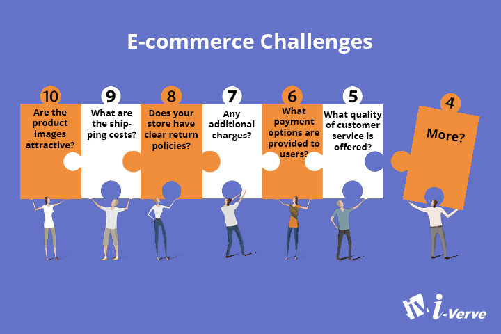
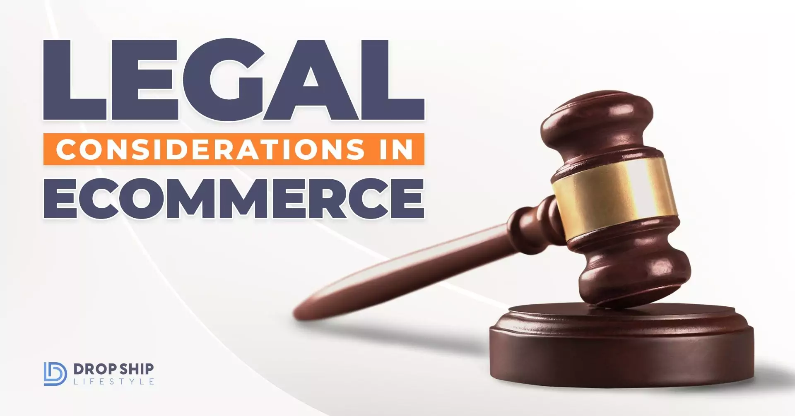
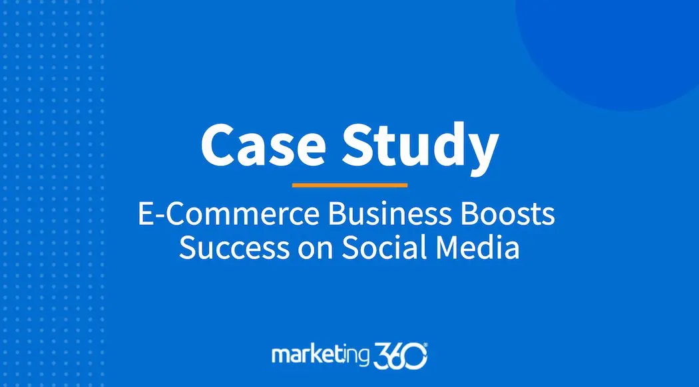
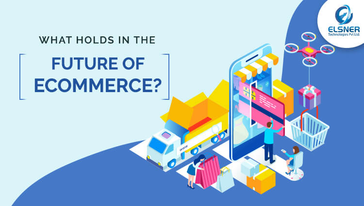

SO WHAT IS E-COMMERCE?
E-Commerce: Revolutionizing Business in the Digital Age

In the fast-paced world of business, one phenomenon has transformed the landscape like never before: Electronic Commerce, more commonly known as E-commerce. E-commerce refers to the buying and selling of goods and services over the internet, facilitated through electronic devices such as computers, smartphones, and tablets. This digital marketplace has revolutionized the way businesses operate, allowing them to reach a global audience, streamline operations, and provide convenient shopping experiences to consumers.
Evolution of E-commerce:

The evolution of e-commerce has been a dynamic journey shaped by technological innovations and changing consumer behaviors. Beginning with the inception of electronic data interchange (EDI) in the 1970s and the advent of online marketplaces in the 1990s, e-commerce has progressed through various stages, including the dot-com boom, the rise of mobile commerce, and the integration of social media platforms for shopping. In recent years, advancements in artificial intelligence, augmented reality, and blockchain technology have further transformed the landscape of online retail, enabling personalized shopping experiences and enhancing security and transparency in transactions. Additionally, the COVID-19 pandemic has accelerated the shift towards e-commerce, emphasizing the importance of digital infrastructure and sustainability in meeting the evolving needs of consumers. As e-commerce continues to evolve, businesses are increasingly focused on innovation, sustainability, and omnichannel strategies to thrive in an ever-changing market landscape.
Types of E-commerce Models:

E-commerce encompasses various business models that cater to different consumer needs and market dynamics. The most common types include Business-to-Consumer (B2C), where businesses sell products or services directly to consumers through online storefronts or platforms like Amazon and eBay. Conversely, Business-to-Business (B2B) e-commerce involves transactions between businesses, such as wholesalers selling to retailers or manufacturers purchasing raw materials from suppliers via online portals. Another model is Consumer-to-Consumer (C2C), where individuals sell goods or services to other consumers through platforms like Craigslist or peer-to-peer marketplaces like Etsy. Additionally, there's Consumer-to-Business (C2B) e-commerce, where individuals offer products or services to businesses, such as freelance services on platforms like Upwork or influencer marketing collaborations. Furthermore, there's Business-to-Government (B2G) e-commerce, focusing on transactions between businesses and government entities, like procurement portals for government agencies. Finally, emerging models like Direct-to-Consumer (DTC) involve brands bypassing traditional retail channels to sell directly to consumers through their websites or dedicated online stores, fostering closer relationships with customers and greater control over the shopping experience.
E-commerce Marketplaces:

An e-commerce marketplace is a digital platform that connects multiple sellers with potential buyers, facilitating transactions for a wide range of products or services. These marketplaces, such as Amazon, eBay, or Alibaba, offer a centralized location where consumers can browse, compare, and purchase items from various sellers. Sellers benefit from the marketplace's established infrastructure, including payment processing and logistics, while consumers enjoy a vast selection of goods and services, often at competitive prices. Marketplaces may specialize in specific niches or operate as general platforms catering to diverse needs. They play a crucial role in the e-commerce ecosystem, providing efficiency, convenience, and accessibility for both sellers and buyers in the digital marketplace.
E-commerce Trends:
 E-commerce is continuously evolving, driven by changing consumer behaviors and technological advancements. Mobile commerce (M-commerce) has surged as smartphones become ubiquitous, prompting businesses to prioritize mobile optimization for seamless shopping experiences. Personalization through artificial intelligence (AI) is enhancing user engagement, with recommendation engines and chatbots delivering tailored interactions. Omnichannel retailing is now imperative, with consumers expecting cohesive experiences across online and offline channels. Social commerce is flourishing, leveraging platforms like Instagram and Facebook for direct sales and influencer marketing. Subscription models offer convenience, while sustainability concerns drive eco-friendly practices and ethical commerce. Augmented Reality (AR) and Virtual Reality (VR) technologies are reshaping product visualization and virtual try-ons. Instant gratification demands prompt fulfillment services, and cryptocurrency payments offer alternative transaction options. These trends underscore the dynamic nature of e-commerce, urging businesses to adapt swiftly to stay competitive in the digital marketplace.
E-commerce is continuously evolving, driven by changing consumer behaviors and technological advancements. Mobile commerce (M-commerce) has surged as smartphones become ubiquitous, prompting businesses to prioritize mobile optimization for seamless shopping experiences. Personalization through artificial intelligence (AI) is enhancing user engagement, with recommendation engines and chatbots delivering tailored interactions. Omnichannel retailing is now imperative, with consumers expecting cohesive experiences across online and offline channels. Social commerce is flourishing, leveraging platforms like Instagram and Facebook for direct sales and influencer marketing. Subscription models offer convenience, while sustainability concerns drive eco-friendly practices and ethical commerce. Augmented Reality (AR) and Virtual Reality (VR) technologies are reshaping product visualization and virtual try-ons. Instant gratification demands prompt fulfillment services, and cryptocurrency payments offer alternative transaction options. These trends underscore the dynamic nature of e-commerce, urging businesses to adapt swiftly to stay competitive in the digital marketplace.
Challenges and Opportunities:

The e-commerce landscape presents both challenges and opportunities for businesses navigating this dynamic sector. Intense competition, evolving consumer preferences, and rapid technological advancements pose significant challenges, requiring companies to continually innovate to stay relevant. Fulfillment logistics, including last-mile delivery and inventory management, present operational hurdles. Additionally, cybersecurity threats and data privacy concerns demand robust measures to safeguard sensitive information. However, amidst these challenges lie abundant opportunities. E-commerce enables global market reach, allowing businesses to access a vast customer base beyond traditional geographic boundaries. Advancements in AI and data analytics offer opportunities for personalized customer experiences and targeted marketing strategies. Furthermore, the growing trend towards sustainability and ethical consumption provides avenues for differentiation and brand loyalty. Strategic partnerships, agile adaptation, and leveraging emerging technologies are key to capitalizing on the opportunities while effectively addressing the challenges within the e-commerce sector.
Legal and Ethical Considerations:

Ethically, e-commerce businesses must prioritize transparency, honesty, and fairness in their practices. This includes providing accurate product information, clear pricing, and truthful advertising to avoid deceptive practices. Maintaining data security and protecting customer privacy are ethical imperatives, requiring robust cybersecurity measures and transparent data handling practices. Furthermore, ensuring fair treatment of workers throughout the supply chain, including suppliers and logistics partners, aligns with ethical business conduct. Embracing sustainability initiatives, such as reducing carbon emissions and minimizing environmental impact, reflects a commitment to ethical stewardship and corporate social responsibility.
Case Studies and Success:

One notable case study exemplifying the success of e-commerce is the rise of Amazon. Founded in 1994 as an online bookstore, Amazon quickly expanded its offerings to become the world's largest online retailer, offering a diverse range of products from books to electronics, clothing, and beyond. Through a combination of customer-centric strategies, innovative technology, and strategic acquisitions, Amazon has transformed the retail landscape. Prime membership, offering fast shipping and access to streaming services, has cultivated customer loyalty, while Amazon's marketplace model allows third-party sellers to reach a global audience. Despite criticisms regarding its market dominance and treatment of workers, Amazon's relentless focus on customer satisfaction and operational efficiency has propelled its success, making it a prominent example of the transformative power of e-commerce.
The Future of E-commerce:

The future of e-commerce is poised for continued growth and innovation, driven by emerging technologies and evolving consumer behaviors. Advancements in artificial intelligence, augmented reality, and virtual reality will revolutionize the online shopping experience, offering personalized recommendations, immersive product visualization, and virtual try-on capabilities. Additionally, the integration of blockchain technology promises enhanced security and transparency in e-commerce transactions, while enabling new forms of digital payments and supply chain management. The expansion of the Internet of Things (IoT) will further blur the lines between online and offline shopping, with smart devices enabling seamless ordering and replenishment of goods. Moreover, sustainability and ethical considerations will increasingly shape e-commerce practices, with consumers demanding eco-friendly products and transparent supply chains. As e-commerce continues to evolve, businesses must embrace agility, innovation, and customer-centricity to thrive in this dynamic landscape.